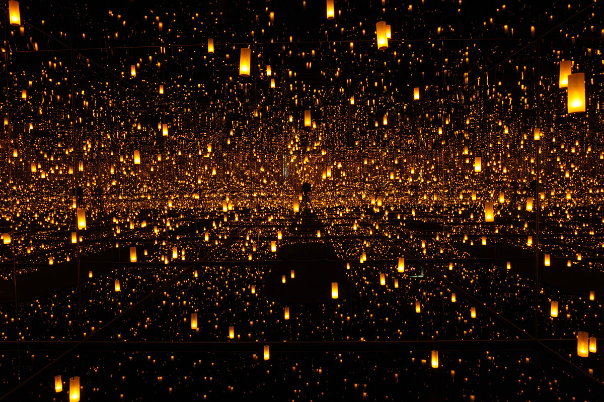
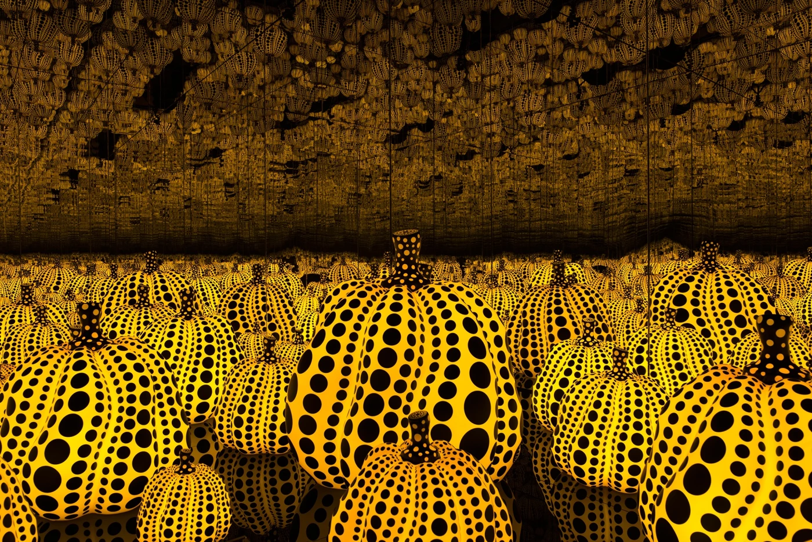
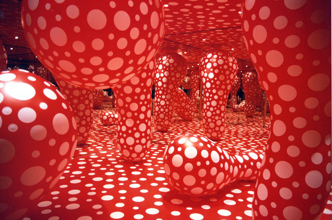
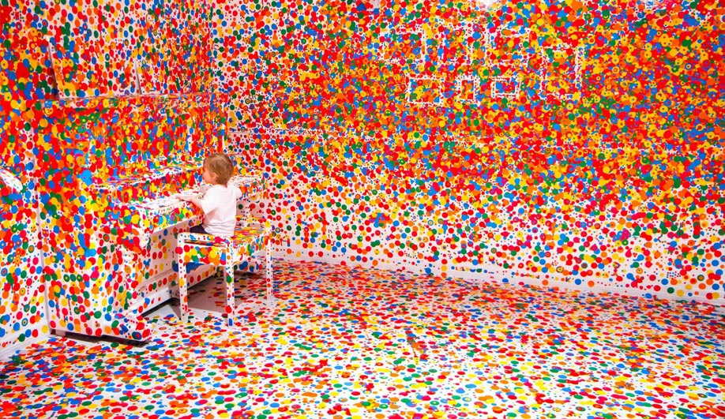
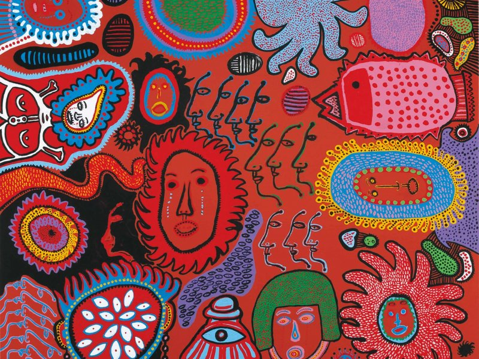
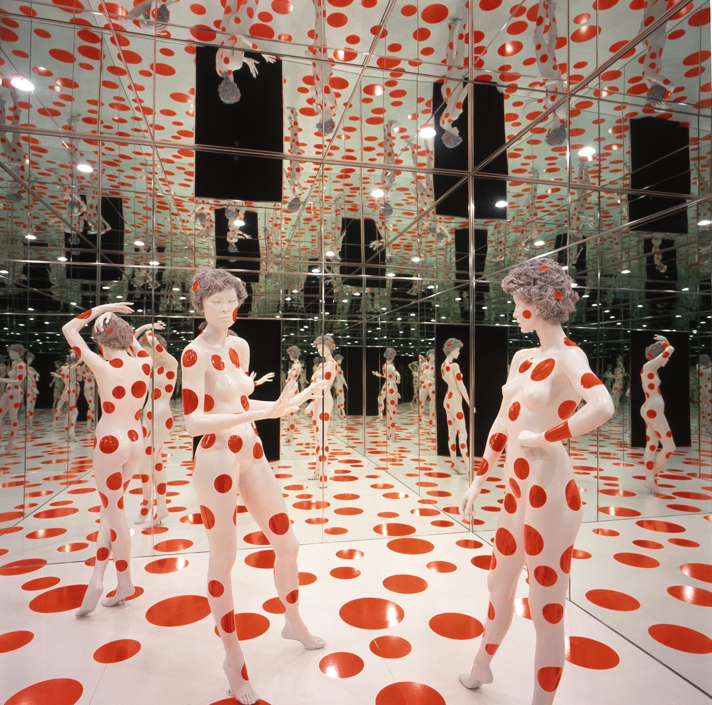
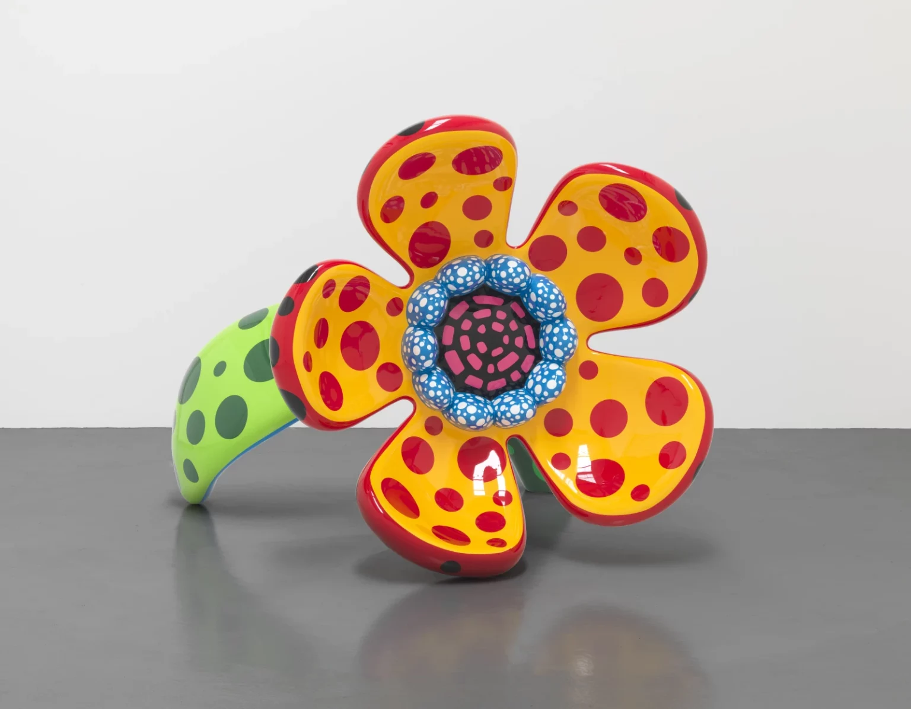
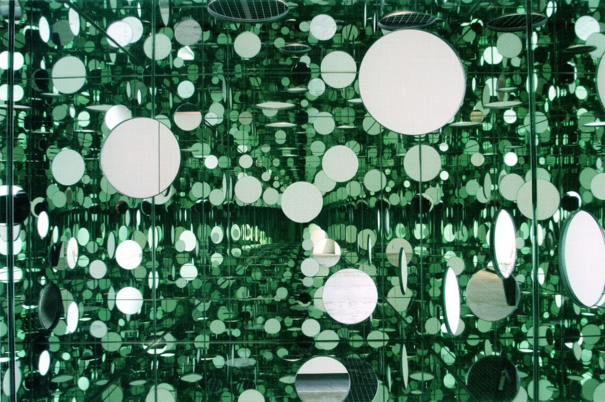
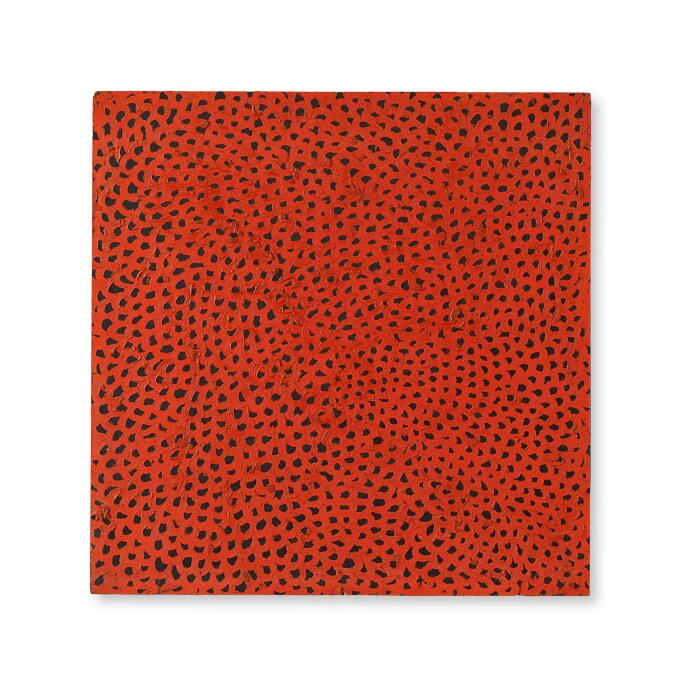
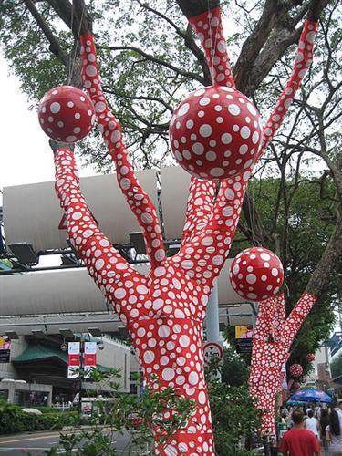

|  | Infinity Mirror Room | 1965 | Een kamer met spiegels die een oneindig effect creëren. |
|  | Pumpkin | 1994 | Een sculptuur van een pompoen met stippen. |
|  | Dots Obsession | 1968 | Een installatie met grote ballonnen bedekt met stippen. |
|  | The Obliteration Room | 2002 | Een kamer met alleen gekleurde bubbels. |
|  | My Eternal Soul | 2002 | Een schilderij met kleurrijke abstracte vormen. |
|  | Repetitive Vision | 2002 | Een installatie met herhalende patronen. |
|  | The Flower That Blooms in My Heart | 2002 | Een schilderij met bloemen en stippen. |
|  | The Passing Winter | 2002 | Een sculptuur met spiegels en licht. |
|  | Infinity Nets | 2002 | Een schilderij met eindeloze netpatronen. |
|  | Ascension of Polka Dots | 2002 | Een installatie met grote ballonnen bedekt met stippen. |